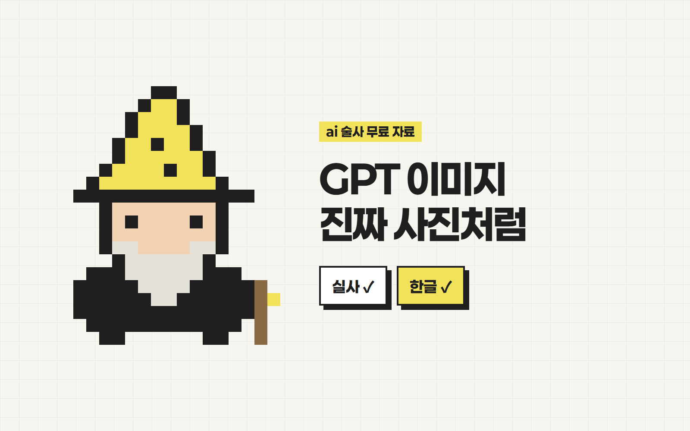
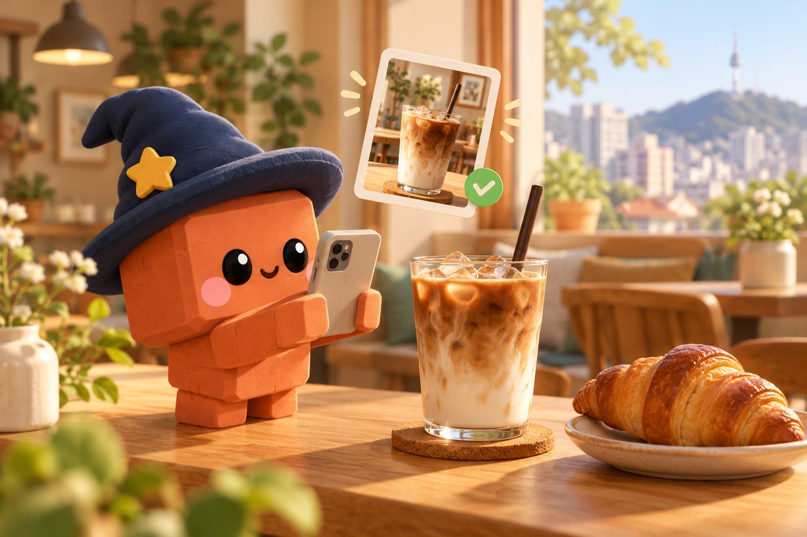
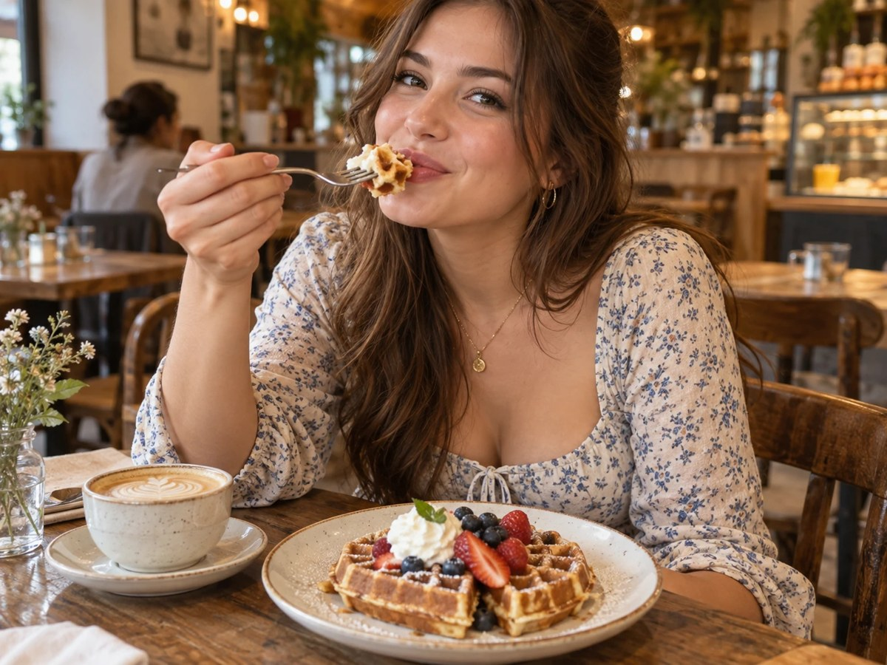
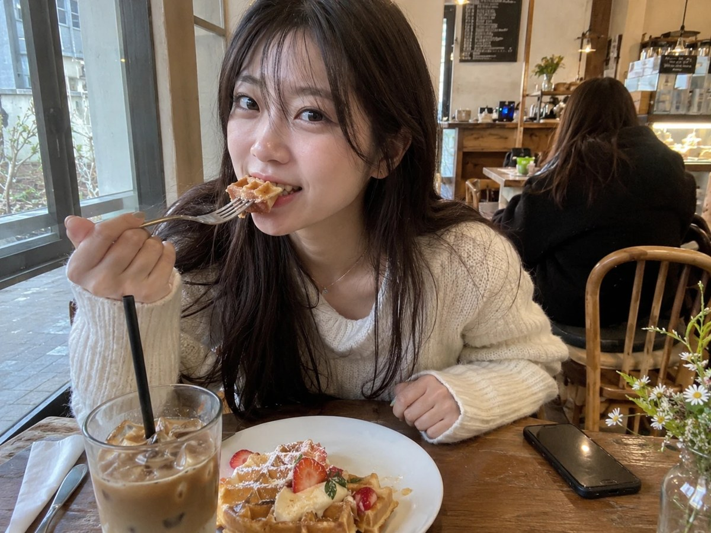

안녕하세요 ai 술사 성준입니다.
GPT 이미지
진짜 사진처럼 만드는 법
GPT로 이미지 만들면
반질반질 플라스틱 같고, 한글은 다 깨지죠?
프롬프트에 세 줄만 붙이면
진짜 사진처럼 나와요!

쓴 것 vs 안 쓴 것


제품 사진, 모델 사진, 가게 메뉴 사진 만드는 데 활용해보세요!
준비물
- 1ChatGPT (무료도 가능)
- 2아래 프롬프트 (복사 버튼)
실사 비밀 프롬프트
AI 특유의 광택이 싹 빠져요.
- 1만들고 싶은 장면을 한국어로 쓰고, 그 아래에 이 3줄을 그대로 붙여요.
Shot on iPhone 15 Pro main camera, 24mm, natural light only, auto white balance, HDR off, slightly off-center casual framing. Keep real textures: visible pores, dust, fingerprints, small imperfections. No retouching, no glossy shine, no oversharpening, subtle film grain. Avoid the AI look: no perfect symmetry, no heavy bokeh, no oversaturated colors, no plastic skin, no cinematic color grading.
영어 그대로 붙이는 게 더 잘 먹혀요. 1줄은 카메라·빛, 2줄은 질감, 3줄은 AI티 금지예요.
반질반질한 느낌 대신 폰으로 찍은 사진처럼 나와요.
글자는 따옴표 안에
한글이 외계어로 깨지는 걸 막아요.
- 1넣을 글자를 큰따옴표로 감싸요.
포스터 제목은 "오늘의 커피", 아래에 "아이스 라떼 4,500원".
글자가 길수록 틀리기 쉬워요. 한 번에 두 줄 이내로 넣고, 틀린 글자가 있으면 그 글자만 다시 고쳐달라고 하세요.
부분 수정은 이렇게
마음에 들던 부분은 그대로 남아요.
- 1수정할 이미지를 올리거나 이어서 말해요.
- 2아래 문장에서 [ ]만 바꿔요.
나머지는 그대로 두고 [바꿀 부분]만 바꿔줘. 다른 건 절대 건드리지 마.
예: 나머지는 그대로 두고 컵만 딸기 라떼로 바꿔줘.
자주 쓰는 규칙
필요한 것만 골라서 붙여요.
세로 9:16 비율로 만들어줘
로고, 워터마크, 글자 없이
한국 사람, 한국 배경으로
배경은 단색으로 깔끔하게, 제품만 크게
결과가 마음에 들면 '방금 이미지 스타일 그대로 하나 더'라고 하면 같은 느낌으로 이어서 만들어요.
주의
- 실제 사람·브랜드 로고를 그대로 따라 만든 이미지는 상업적으로 쓰지 마세요.
- 결과물은 그날 모델 상태에 따라 조금씩 달라질 수 있어요.
이렇게 써먹어요
- 블로그·인스타 썸네일용 실사 사진
- 가게 메뉴판·포스터 시안
- 상품 상세페이지 이미지 초안
궁금하신 점은 DM으로 편하게 물어봐 주세요 🪄
From. ai 술사 | 성준
ai술사의 모든 꿀팁 확인하기!